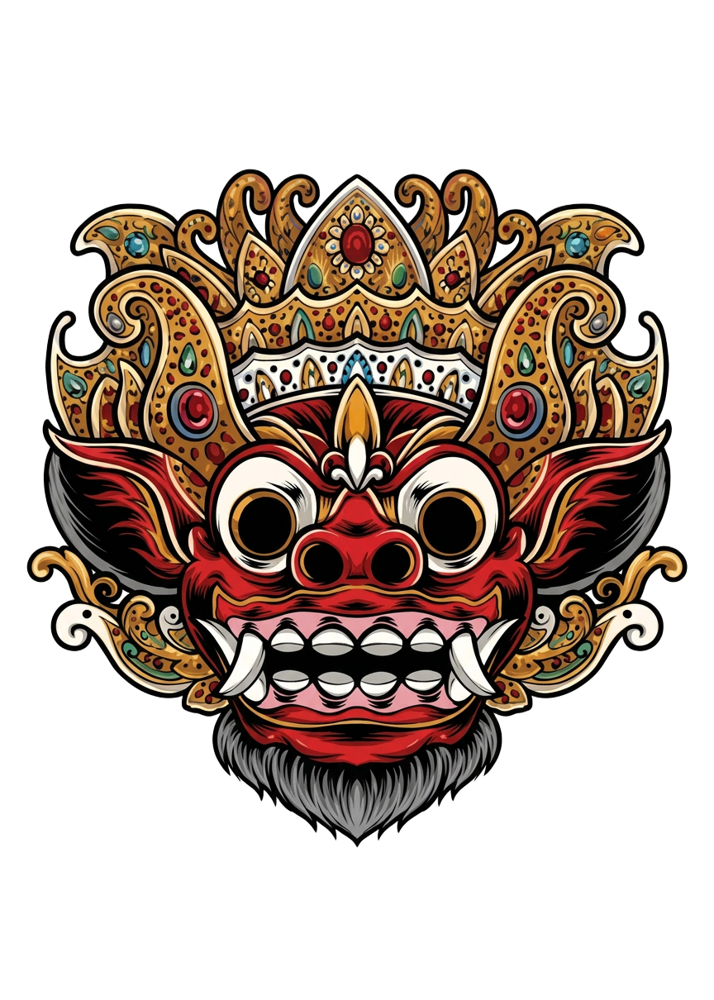
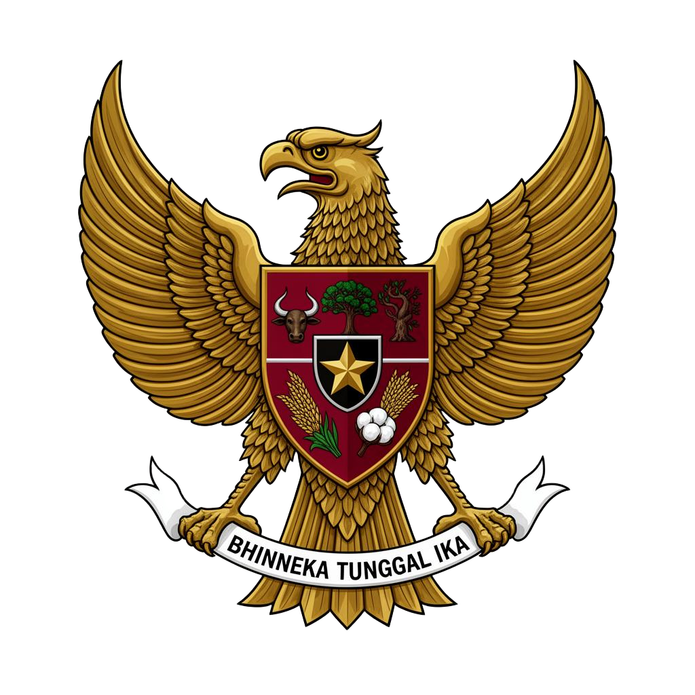
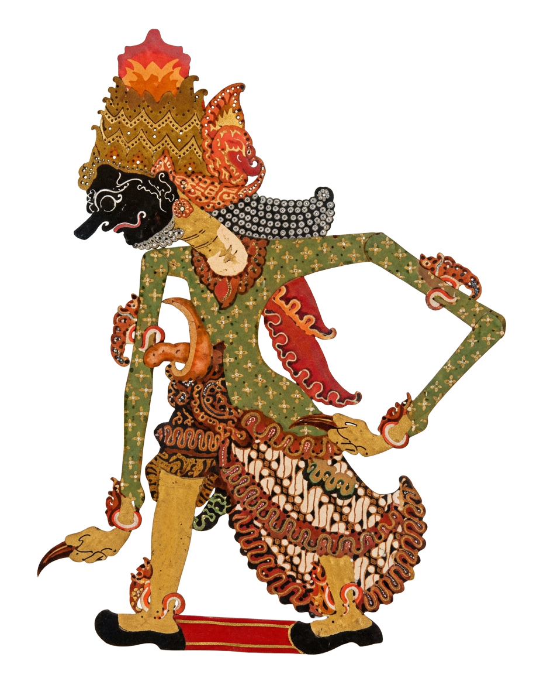

Orientasi Sekolah
Mengenal visi, misi, fasilitas, dan budaya akademik SMA Negeri 5 Tuban.
Membentuk generasi berkarakter Nusantara — berakar pada budaya, tumbuh dengan ilmu, melangkah ke masa depan. Portal MPLS 2026 SMA Negri 5 Tuban menghadirkan jadwal, materi, soal, dan absensi digital dalam 1 sentuhan.
MPLS SMAN 5 Tuban dirancang sebagai jembatan adaptasi siswa baru — mengenal lingkungan, budaya sekolah, guru, dan teman gugus dengan cara yang interaktif dan bermakna.
Mengenal visi, misi, fasilitas, dan budaya akademik SMA Negeri 5 Tuban.
Lima gugus dengan kegiatan kolaboratif, kompetitif, dan penuh sportivitas.
Disiplin, integritas, dan kepemimpinan ditanamkan sejak hari pertama.
Ikuti alur sederhana untuk mulai mengikuti seluruh kegiatan MPLS secara digital.
Buat akun siswa dengan email & password aktif.
Masuk memakai akun yang sudah didaftarkan.
Verifikasi lokasi GPS atau verifikasi wajah.
Soal, materi, jadwal, & rating OSIS terbuka.
Pilihan ganda & isian.
Akses materi kapan saja.
Jadwal harian MPLS.
Radius 300m sekolah.
Izin & sakit via kamera.
Penilaian & masukan.
Grafik per gugus.
OSIS & Siswa terpisah.
Setiap siswa baru tergabung dalam salah satu gugus untuk mendukung kerja sama tim.
SMAN 5 Tuban memuliakan kekayaan budaya Nusantara — dari Topeng Bali, Wayang Jawa, sampai lambang Garuda Pancasila — sebagai inspirasi karakter siswa.

Simbol pertarungan kebaikan dan keburukan dari Pulau Dewata — pengingat untuk selalu berpihak pada dharma.

Lambang negara yang mengikat kita semua. Dasar moral, kebanggaan, dan arah perjuangan generasi muda Indonesia.

Seni adiluhung pewarisan nilai. Tokoh-tokohnya mengajarkan keteguhan, kearifan, dan tanggung jawab.
“Berbeda-beda tetapi tetap satu jua — semangat Bhinneka Tunggal Ika hidup di setiap sudut SMAN 5 Tuban.”
Daftar sekarang dan nikmati seluruh fitur MPLS resmi SMAN 5 Tuban.